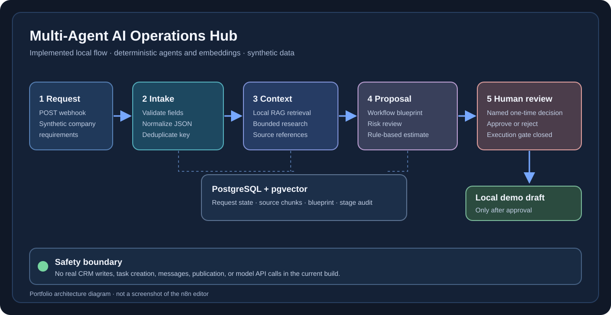
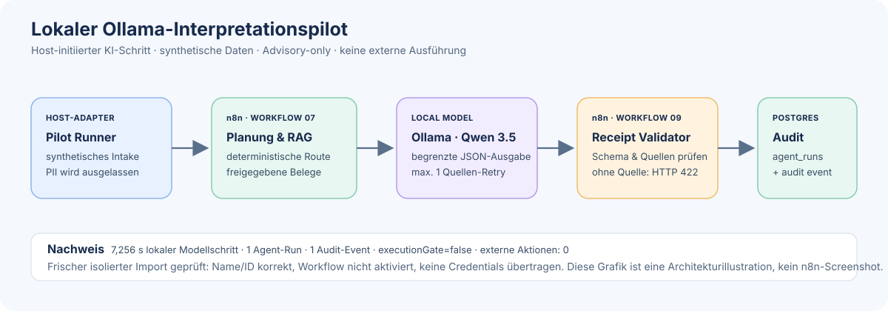

Hauptprojekt · lokal ausführbar · synthetische Daten
Multi-Agent AI Operations Hub
Ein kontrollierter n8n-Prototyp, der unstrukturierte Automatisierungsanfragen validiert, mit internem Wissen verbindet und als prüfbaren technischen Entwurf aufbereitet. KI interpretiert – deterministische Logik kontrolliert.
Ehrliche Einordnung: Der Name beschreibt das Zielbild. Der aktuelle Stand ist ein Portfolio-Prototyp, keine autonome Multi-Agenten-Produktionsplattform. Die zentrale Orchestrierung nutzt deterministische Agenten-Baselines; ein lokales Modell liefert begrenzte Hinweise.
Problem und Ziel
Von Freitext zu einem kontrolliert prüfbaren Entwurf.
Automatisierungsanfragen enthalten häufig Lücken, unklare Schnittstellen und sensible Daten. Das System soll diese Risiken sichtbar machen, bevor irgendetwas extern verändert wird.
Eingabe
Unstrukturierte Unternehmensanfrage, aktuelle Tools, Ziele, Einschränkungen und Idempotency-Key.
Ergebnis
Strukturierter Lösungsentwurf mit RAG-Evidenz, Risikoanalyse, Aufwandsspanne und offenen Fragen.
Kontrolle
Namentliche menschliche Freigabe; die Portfolio-Demo erzeugt ausschließlich einen lokalen synthetischen Entwurf.
Systemarchitektur
Deterministische Kontrolle um einen begrenzten lokalen AI-Schritt.


Komponenten
Klare Rollen und validierte Übergaben.
Jede Stufe erhält nur die Daten, die sie benötigt. Kritische Entscheidungen bleiben außerhalb des Sprachmodells.
Intake
Prüft Felder, Formate, sensible Daten und Idempotenz. Ungültige Eingaben werden auditiert gestoppt.
Research + RAG
Nutzt einen begrenzten lokalen Tool-Katalog und freigegebene Wissensbausteine aus PostgreSQL/pgvector.
Solution Design
Erstellt Trigger, Datenflüsse, Integrationen, Fehlerpfade und offene Fragen als strukturierten Entwurf.
Risk + Estimate
Markiert Datenschutz-, Dubletten- und Berechtigungsrisiken und erzeugt eine regelbasierte Aufwandsspanne.
Local AI Advisory
Qwen über Ollama interpretiert Freitext. Das Ergebnis muss ein enges Schema und mindestens eine zulässige Quellen-ID erfüllen.
Human Review
Eine einmalige namentliche Freigabe oder Ablehnung wird auditiert. Das Ausführungstor bleibt standardmäßig geschlossen.
Tests und Evaluation
Ergebnisse mit sichtbaren Grenzen.
Alle Angaben stammen aus lokalen synthetischen Testläufen. Es werden keine Produktivdaten oder realen Kundensysteme verwendet.
| Prüfung | Ergebnis | Einordnung |
|---|---|---|
| Automatisierte Tests | 168 bestanden | Validierung, Routing, Agenten-Baselines, Freigaben und Fehlerpfade |
| Lokale Ollama/n8n-Läufe | 3 erfolgreich | Synthetische Anfragen; keine externen Aktionen |
| Vorab markierter AI-Satz | 14/15 akzeptiert | Ein Fall stoppte trotz vorhandener passender Quelle: False Negative |
| Trigger unter akzeptierten Fällen | 14/14 passend | Kleiner synthetischer Einmallauf, nicht generalisierbar |
| Markierte Quellenpräzision | 85,7 % im Mittel | Keine semantische Entailment-Prüfung; menschliche Kontrolle bleibt nötig |
Nicht behauptet: produktionsreife autonome Agenten, reale Kundenwirkung oder inhaltlich stets korrekte Empfehlungen. Die Evaluation zeigt technische Kontrollmechanismen, nicht die vollständige fachliche Richtigkeit jedes Vorschlags.
Prüfbare Exporte
Zwei zentrale n8n-Workflows.
Die Exporte enthalten keine Zugangsdaten und sind deaktiviert. PostgreSQL-Credentials müssen nach einem Import lokal neu ausgewählt werden.